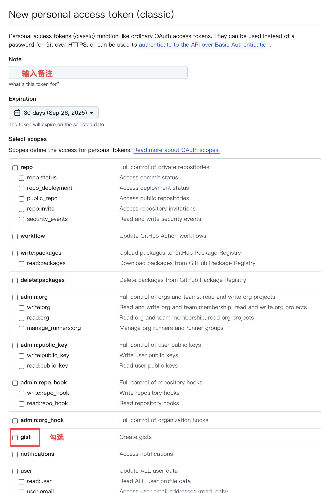

此向导将帮助您获取 S1 Plus 远程同步功能所需的 Gist ID 和 GitHub Personal Access Token。
第一步：创建 Gist
-
点击下方按钮访问 gist.github.com 并登录您的 GitHub 账户。
- 在 "Gist description..." 输入框中，填写一个便于您自己识别的描述，例如：
S1 Plus Sync Data。
-
在文件名和文件内容区域，随意填写一些内容，例如文件名填
s1plus_sync.json，内容填 {}。
仅用于占位，脚本首次成功同步后，会自动覆盖此内容。
-
点击 "Create secret gist" 按钮创建一个私有的 Gist。
-
创建成功后，浏览器地址栏的 URL 会变成类似
https://gist.github.com/YourUsername/abcdef1234567890 的格式。
这串唯一的字符 abcdef1234567890 就是您的 Gist ID。请复制它。
第二步：创建 Personal Access Token (PAT)
-
点击下方按钮访问 GitHub 的开发者设置页面。
前往 GitHub 设置
-
点击 "Generate new token" -> "Generate new token (classic)"。
-
在 "Note" 输入框中填写描述，例如：
S1 Plus Sync。
在 "Expiration" 处选择一个有效期（推荐90天或更长）。
- 在 "Select scopes" 中，**仅勾选**
gist 权限。这是唯一需要的权限。

-
点击页面底部的 "Generate token" 按钮。
-
重要： 生成的 Token 只会显示一次！请立即复制它（以
ghp_ 开头），并像密码一样妥善保管。
第三步：完成配置
- 回到 Stage1st 论坛的 S1 Plus 设置面板（“设置同步”标签页）。
- 将您复制的 Gist ID 和 Personal Access Token 粘贴到“远程同步”模块的对应输入框中。
- 点击“保存设置”按钮，开启“启用远程同步”的开关。
- 点击“手动同步”按钮，根据提示完成首次数据同步。